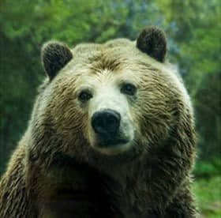

The brown bear (Ursus arctos) is native to parts of northern Eurasia and North America. It's conservation status is currently "Least Concern". There are many subspecies within the brown bear species, including the Atlas bear and the Himalayan brown bear.
Learn More